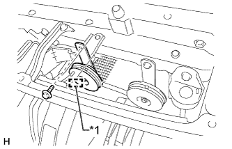
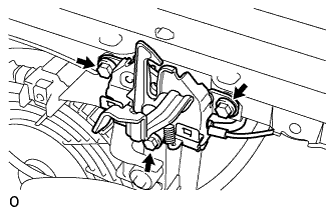

ВЫКЛЮЧАТЕЛЬ ОСВЕЩЕНИЯ ПРОЕМА КАПОТА ДВИГАТЕЛЯ > СНЯТИЕ |
| 1. СНИМИТЕ ВЕРХНЕЕ УПЛОТНЕНИЕ КРОНШТЕЙНА РАДИАТОРА |
Освободите 13 фиксаторов и снимите верхнее уплотнение кронштейна радиатора.
| 2. СНИМИТЕ РЕШЕТКУ РАДИАТОРА |
 |
Наклейте защитную клейкую ленту вокруг решетки радиатора.
Освободите 2 фиксатора и выверните 2 болта.
Расцепите 8 захватов и снимите решетку радиатора.
| *1 | Защитная клейкая лента |
| 3. СНИМИТЕ ДАТЧИК РАДАРА МИЛЛИМЕТРОВОГО ДИАПАЗОНА В СБОРЕ (для моделей с динамической радарной системой круиз-контроля) |
 |
Отсоедините разъем датчика.
Выверните 3 болта и снимите датчик.
| 4. СНИМИТЕ ЗАЩИТНЫЙ ЭЛЕМЕНТ РЫЧАГА РАЗБЛОКИРОВКИ ЗАМКА КАПОТА |
 |
Освободите 2 захвата и 2 направляющих и снимите защитный элемент рычага разблокировки замка капота.
| 5. СНИМИТЕ НИЗКОЧАСТОТНЫЙ ЗВУКОВОЙ СИГНАЛ В СБОРЕ (для моделей с левосторонним рулевым управлением) |
 |
Отсоедините разъем.
| *1 | Часть |
Выверните болт и снимите низкочастотный звуковой сигнал.
| 6. СНИМИТЕ ВЫСОКОЧАСТОТНЫЙ ЗВУКОВОЙ СИГНАЛ В СБОРЕ (для моделей с левосторонним рулевым управлением) |
|  |
Отсоедините разъем.
| *1 | Часть |
Выверните болт и снимите высокочастотный звуковой сигнал.
| 7. СНИМИТЕ КРЫШКУ ТРОСА УПРАВЛЕНИЯ ЗАМКОМ КАПОТА |
Выверните 2 болта.
Освободите захват и снимите крышку троса управления замком капота.
| *A | Для моделей с левосторонним рулевым управлением |
| *B | Для моделей с правосторонним рулевым управлением |
| 8. СНИМИТЕ ЗАМОК КАПОТА В СБОРЕ |
|  |
Выверните 3 болта и отверните гайку замка капота.
 |
Отсоедините разъем.
Отсоедините трос управления замком капота и снимите замок капота в сборе.